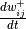
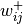
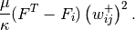
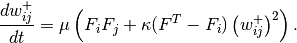

Long-term memory requires memory consolidation, which consolidates the synapse locally to enhence memory or transfers momories to other area.
At the region that connects hippocampus and cortex, LTS (Long-term storage) and STS (Short-term storage) happens at the same time. This indicates that neurons in this cross-section mentains two different types of dynamics, one of which responds to consolidation (i.e., synapse weight change), while the other doesn’t.
#TIL# Recall momory can destablize the corresponding memory itself
In the paper by Tetzlaff [Tetzlaff2013], they mentioned it.
Tetzlaff et al found a solution to this time scale problem [Tetzlaff2013]. In principle,  can be Taylor expanded to have all orders of . In this work by Tetzlaff, they included a simple plasticity (zeroth order in Taylor expansion)
as well as a synapse scaling (second order in Taylor expansion)

We put those two together,

Such a updating rule for weights contains dynamics of bifurcation. For a region of input frequencies, activity and weights exhibit bistability, thus leading to neurons evolve to different states. Neurons recieved strong inputs have larger weights due to plasticity. Those neurons with large weights evolve into equilibrium points of LTS for the corresponding frequency.
| [Tetzlaff2013] | (1, 2) Tetzlaff, C., Kolodziejski, C., Timme, M., Tsodyks, M., & Wörgötter, F. (2013). Synaptic Scaling Enables Dynamically Distinct Short- and Long-Term Memory Formation. PLoS Computational Biology, 9(10), e1003307. https://doi.org/10.1371/journal.pcbi.1003307 |